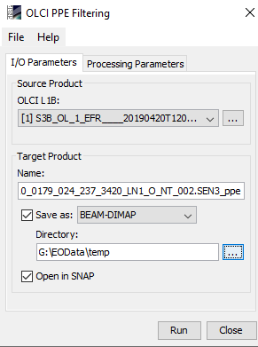
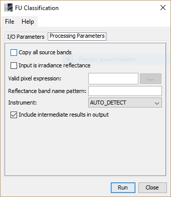

Prompt Particle Event Filtering
User Interface
PPE Filtering can be invoked in the Sentinel Toolbox from tool menu by selecting
Optical -> Thematic Water Processing-> PPE Filtering.

Source Product Group
Source product: Here the user specifies the source product reflectance. The combo box presents a list of all products opened
in the Sentinel Toolbox. The user may select one of these or, by clicking on the button next to the combo box, choose a product
from the file system.
Target Product Group
Name: to specify the name of the target product.
Save as: checkbox to specify whether the target product should be saved to the file system. The combo box presents a
list of available file formats. The text field or the button next to it allow to specify a target directory.
Open in SNAP: Used to specify whether the target product should be opened in the Sentinel Toolbox. When the
target product is not saved, it is opened in the Sentinel Toolbox automatically.

Processing Parameters Panel
Filtering cut-off, [mW.m-2.sr-1.nm-1]:
Pixel will be filtered if it deviates from its neighbors mediane by more than this number. Default value=0.7 [mW.m-2.sr-1.nm-1]
Filtering cut-off, number of Median Absolute Deviation:
Pixel will be filtered if it deviates from its neighbors mediane by more than this number times Mediane Absolute Deviation. Default value=10
Band keyword:
Band or bands which should be filtered have to have this keyword in bandname.
Valid pixel expression:
This expression is uses for validating pixels which will be considerd for processing, if the user did not add any
expression only the water pixels will be filtered. If the
expression is set to
TRUE, then all pixels are considered to be valid. The button can be use in creating a valid express.